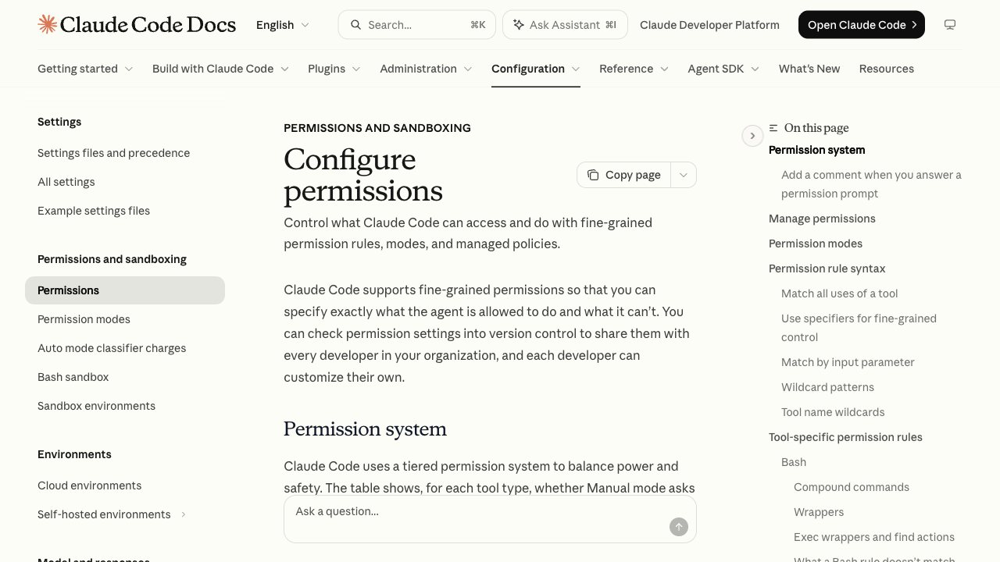

C uando una herramienta de IA te pide acceso a tu correo, a tu banco o a tus archivos, casi siempre hay más de una forma de dársela, y la que te ofrece por defecto no suele ser la mejor para ti. La diferencia entre pegarle una contraseña y autorizarla con un permiso de solo lectura no es un detalle técnico: es la diferencia entre que un fallo te cueste un susto o te cueste la cuenta.
Esta guía va de eso — de los mecanismos concretos con los que se le da acceso a un agente, qué protege cada uno y cuál elegir. No va de si debes usar agentes: eso ya lo decides tú. Va de que, si los usas, el permiso que les das es la única pieza que sigue funcionando cuando todo lo demás falla.
1. La pregunta no es si te fías del agente
La forma habitual de pensar esto es: «¿me fío de esta herramienta?». Es una pregunta razonable y es la equivocada, porque supone que el riesgo viene de que la empresa sea deshonesta. El riesgo real viene de otro sitio: de que el agente haga caso a alguien que no eres tú.
Un agente útil lee cosas. Lee tu correo, abre páginas web, procesa documentos, repasa comentarios de un repositorio. Y un modelo de lenguaje no tiene una frontera sólida entre «esto es contenido que debo analizar» y «esto es una orden que debo cumplir». Si alguien escribe instrucciones dentro de ese contenido, hay una probabilidad nada despreciable de que el agente las obedezca creyendo que vienen de ti. Lo desarrollamos a fondo en la guía sobre inyección de prompts, con casos ya documentados en productos de Microsoft, GitHub y Google, y con una conclusión incómoda: las propias empresas que lo sufren admiten que no tiene arreglo definitivo.
Si aceptas eso, la consecuencia práctica es directa. No puedes apostar la seguridad a que el agente se porte bien, porque no controlas todo lo que va a leer. Lo que sí controlas es hasta dónde llega si se porta mal. Y eso se decide en el momento de dar el acceso, no después.
De ahí que la pregunta útil sea otra: si esta herramienta hiciera exactamente lo peor que puede hacer con el acceso que le estoy dando, ¿qué pasaría? Si la respuesta es «lee cosas que ya son mías y no puede cambiarlas», estás en un sitio razonable. Si la respuesta es «puede mover dinero, borrar correo o cambiar mi contraseña», el problema no es el agente: es el permiso.
2. Tres formas de dar acceso, y no son equivalentes
Casi todo lo que te vas a encontrar cae en una de estas tres. Merece la pena saber cuál te están pidiendo, porque las tres se presentan con el mismo botón de «Conectar».
La contraseña: la peor, y la más fácil de dar
Es el método que usa una herramienta cuando entra en el servicio haciéndose pasar por ti. Funciona siempre, porque no necesita que el servicio colabore, y por eso sigue siendo tan común. El problema es que una contraseña no sabe limitarse: no existe la versión «de solo lectura» de tu contraseña. Le estás dando la cuenta entera, con todo lo que eso incluye — leer, escribir, borrar, cambiar el correo de recuperación.
Hay dos efectos secundarios que se pasan por alto. El primero es que te quedas sin registro: lo que haga el agente aparece como hecho por ti, y si tienes que reclamar algo, no hay forma limpia de separar una cosa de la otra. El segundo es que el segundo factor deja de ser un segundo factor — alguien tiene que aprobar ese aviso que llega al móvil, y si la respuesta es «lo aprueba el agente», has convertido la verificación en un trámite.
La clave de API: revocable, pero normalmente sin matices
Una clave de API es una credencial creada aparte, para una herramienta concreta. Gana en dos cosas importantes: puedes anularla sin tocar tu contraseña ni cerrar tus sesiones, y puedes crear una por herramienta, de modo que apagar una no rompe las demás. Eso ya es mucho.
Lo que no suele dar es granularidad. En bastantes servicios la clave hereda todos los permisos de quien la creó, así que «clave de API» acaba significando «la cuenta entera, pero con interruptor». Algunos proveedores sí permiten acotarla — por proyecto, por repositorio, por solo lectura — y cuando existe esa opción hay que usarla. La regla sencilla: si no puedes ver y limitar qué permisos lleva la clave, trátala como si fuera la contraseña, porque en la práctica lo es.
OAuth con permisos: la buena, cuando está disponible
Aquí no le das ninguna credencial tuya al agente. Te manda al servicio, te autenticas tú en la página del servicio, y lo que recibe el agente es un token: un pase emitido para esa herramienta, con una lista concreta de permisos dentro y, normalmente, con caducidad. Tu contraseña nunca pasa por la herramienta.
Es el mismo mecanismo de «Iniciar sesión con Google» que llevas años usando, aplicado a agentes. Y la parte que de verdad importa no es el flujo sino lo que viene escrito en ese pase: los permisos.
3. Qué es un permiso y por qué «solo lectura» aguanta
Un permiso — scope, en la documentación que te vas a encontrar — es la lista de operaciones que ese token autoriza. No es una etiqueta descriptiva ni una promesa: va dentro del token, y el servidor del otro lado la comprueba en cada petición.
Eso es lo que lo hace valioso. Si el token dice «leer archivos» y el agente pide borrar uno, el servidor responde con un error y no borra nada. Da igual por qué lo pidió: da igual si fue un fallo del modelo, una instrucción escondida en un documento o un error tuyo al redactar la tarea. La comprobación no ocurre en el agente, ocurre en el servicio, que es justo el sitio donde un atacante no está.
Por eso un permiso de solo lectura es la defensa más barata y más robusta que tienes a mano. No depende de que el modelo sea bueno, ni de que la empresa sea seria, ni de que tú hayas escrito bien la instrucción. Convierte el peor caso de «me han vaciado la cuenta» en «me han leído cosas que ya tenían que leer para hacer su trabajo» — que no es inocuo, pero es otro orden de magnitud.
La especificación del Model Context Protocol, el estándar que usan cada vez más herramientas para conectar modelos con servicios, lo deja escrito como principio: los clientes deberían seguir el principio de mínimo privilegio y pedir solo los permisos necesarios para lo que van a hacer, y el conjunto que un servidor publica por defecto está pensado como «el mínimo necesario para funcionar», no como el máximo disponible (especificación de autorización de MCP). Si necesita más, lo pide más adelante, cuando le haga falta.
La traducción a tu pantalla es sencilla: cuando una herramienta te enseñe la lista de permisos que va a pedir, esa pantalla no es un trámite. Es el único momento del proceso en el que tú decides algo. Si pide escribir y tú solo querías que leyera, ahí es donde se para.
4. Lo que acaban de hacer los bancos
En octubre de 2026 varios bancos grandes de Estados Unidos han hecho pública la misma decisión, y es un caso práctico de todo lo anterior.
Charles Schwab explicó el 16 de octubre, por boca de su consejero delegado Rick Wurster en una entrevista en Bloomberg Television, que bloquea a los agentes externos que entran en las cuentas de sus clientes usando las credenciales de esos clientes — y citó por su nombre a Muse, el asistente de Meta. Wurster describió un informe semanal de bloqueos y situó a los grandes proveedores en el orden de «decenas y veintenas» por semana. El argumento que dio no fue técnico sino de responsabilidad: ni la firma ni el cliente controlan lo que hace ese agente, y si algo sale mal no está claro quién responde.
JPMorgan dijo algo equivalente en su presentación de resultados del 13 de octubre, con Jamie Dimon resumiéndolo en una frase que se ha citado mucho: no quieres agentes descontrolados, y podría haber miles. Citigroup confirmó al Financial Times que no permite que un agente externo inicie sesión ni opere. Y Bank of America lo ha restringido mientras define de quién es la responsabilidad cuando un pago lo inicia una IA; su consejero delegado, Brian Moynihan, lo dejó en que debe haber una persona en el circuito para autorizar que el dinero salga de tu cuenta.
Lo interesante no es el bloqueo, es dónde ponen la raya. Ninguno está cerrando la puerta a la IA: los cuatro mantienen el acceso de solo lectura — consultar saldos, analizar movimientos — a través de canales previstos para eso. Schwab, de hecho, lo está abriendo mediante sus propios servidores MCP, que permiten consultar y analizar pero no mover dinero, y empuja a sus clientes hacia su asistente propio. Lo que bloquean es exactamente una cosa: que un tercero entre con tu contraseña y pueda ejecutar.
Conviene añadir el contexto que publicó el Financial Times, porque explica parte del entusiasmo: JPMorgan, Bank of America y Wells Fargo tienen en torno a 1,6 billones de dólares en depósitos que no pagan intereses, y un asistente que fuera moviendo ese dinero a cuentas mejor remuneradas les saldría caro. Que el motivo declarado sea la responsabilidad y exista además un incentivo económico no convierte el argumento en falso — la pregunta de quién responde sigue sin respuesta — pero sí recomienda leer estos anuncios sabiendo que hay dos cosas en juego.
Para ti, la lectura útil es la del diseño: cuatro organizaciones con mucho que perder han llegado por su cuenta a la misma conclusión que esta guía. Credenciales compartidas, no. Lectura con un canal acotado, sí. Ejecución, solo con una persona delante. Europa, por cierto, tuvo esta misma discusión hace años con la banca abierta y la normativa PSD2, y acabó en el mismo sitio: interfaces dedicadas en vez de que un tercero entre con tus claves.
5. Lo que el estándar MCP obliga de verdad
Si conectas herramientas a un modelo, antes o después te cruzas con MCP. Si no lo tienes situado, nuestra guía del protocolo explica qué es y cómo se monta uno. Lo que interesa aquí es otra cosa: qué exige su especificación en materia de permisos, porque hay varias reglas que te protegen sin que tengas que hacer nada — y una que conviene conocer porque no te protege.
Lo primero, y suele sorprender: la autorización en MCP es opcional. La especificación dice que las implementaciones sobre HTTP deberían seguirla, no que deban. Así que «usa MCP» no significa «tiene OAuth». Es una pregunta que hay que hacer, no una garantía que venga de serie.
Cuando sí se implementa, el reparto de papeles es el de OAuth 2.1 de toda la vida: el servidor MCP es el recurso protegido, la herramienta es el cliente y hay un servidor de autorización aparte que emite los tokens. Sobre eso, la especificación impone unas cuantas cosas en términos de obligación (consideraciones de seguridad de MCP):
- El token vale para un destino y solo uno. El servidor debe comprobar que el token se emitió específicamente para él y rechazar los que no lo incluyan como destinatario. Un pase robado de otro servicio no sirve aquí.
- Nada de reenviar tu token. Si el servidor MCP necesita a su vez llamar a otra API, tiene que conseguir su propio token para esa API: la especificación le prohíbe expresamente pasar el que recibió de ti. Es lo que evita que un servidor intermedio acumule pases ajenos.
- PKCE obligatorio. El cliente debe implementarlo y, si el servidor de autorización no declara que lo soporta, debe negarse a continuar. Esto cierra la ventana en la que alguien intercepta el código de autorización a medio camino.
- El token no viaja en la URL. Va en la cabecera, nunca en la dirección — que es donde se queda registrado en historiales y registros de servidor.
- Tokens de vida corta. El servidor de autorización debería emitirlos con caducidad breve, para que uno filtrado deje de servir pronto.
Hay además una regla pensada para un ataque con nombre propio, el del diputado confundido: cuando un servidor MCP actúa de intermediario hacia APIs de terceros usando un identificador de cliente compartido, tiene que pedirte consentimiento por cada cliente registrado antes de reenviar nada. Sin eso, un atacante podría aprovechar que tú ya autorizaste al intermediario para colarse detrás.
¿Qué haces tú con esto? Dos cosas. Una, usarlo como lista de comprobación cuando elijas una herramienta que se conecta a tus cuentas: si su documentación no menciona ninguna de estas piezas, probablemente no esté implementando el flujo y esté pidiéndote una clave. Y dos, fijarte en el error que te devuelve cuando algo no funciona — un 401 significa que no hay token válido; un 403 significa que el token existe pero no tiene permiso para eso. El segundo no es un fallo: es el sistema funcionando.
6. El hueco del que casi nadie avisa: el servidor local
Aquí está la parte que más veces he visto malinterpretada, y la especificación es explícita al respecto.
Todo lo anterior — tokens, permisos, audiencias, caducidad — aplica al transporte HTTP, es decir, a servidores MCP que viven en algún sitio de internet. Pero muchos de los servidores MCP que instala la gente se ejecutan en su propio ordenador y se comunican por STDIO. Para esos, la especificación dice algo distinto: que no deberían seguir el flujo de autorización y que obtengan las credenciales del entorno (especificación de autorización de MCP).
Traducido: ese servidor tiene la clave que tú pegaste en su configuración, tal cual, con todos los permisos que esa clave traiga. No hay pantalla de consentimiento, no hay lista de permisos que revisar, no hay caducidad. Si le diste una clave de administrador, el servidor es administrador.
No es un defecto del diseño — un proceso que corre en tu máquina ya está dentro de tu máquina, y montarle un flujo de navegador no añadiría gran cosa. Pero sí cambia dónde tienes que poner el cuidado. Con un servidor local, tu control no está en la pantalla de permisos, está en qué clave le das. Si el servicio permite emitir una clave acotada, ese es el momento de hacerlo. Y conviene mirar con calma qué servidores MCP instalas: estás ejecutando código de terceros con acceso a tus credenciales, que es una decisión más parecida a instalar una aplicación que a conectar una cuenta.
7. Revocar, rotar y revisar
Dar el acceso es el momento que todo el mundo atiende. Quitarlo es el que nadie atiende, y es donde se acumula el riesgo de verdad: no en la herramienta que usas a diario, sino en las cuatro que probaste una tarde de marzo y siguen conectadas con los permisos del primer día.
Revocar es, casi siempre, más fácil de lo que parece, y tiene una ventaja sobre cambiar la contraseña: no rompe nada más. En Google se hace desde tu cuenta, en el apartado de datos y privacidad, en la lista de aplicaciones y servicios de terceros — los nombres exactos de los menús han ido cambiando, pero la lista siempre está ahí y permite quitar el acceso de una aplicación concreta. Microsoft, GitHub, Dropbox, Notion y cualquier servicio que ofrezca «Iniciar sesión con…» tienen su equivalente. Las claves de API se anulan desde el panel del proveedor que las emitió.
Tres hábitos que valen más que cualquier configuración:
- Una credencial por herramienta. Compartir una clave entre tres integraciones significa que el día que tengas que anularla, se te caen las tres y no sabrás cuál era la que falló.
- Revisión trimestral. Diez minutos, las tres o cuatro cuentas que importan, fuera todo lo que no reconozcas o no hayas usado en tres meses. Es aburrido y es lo que funciona.
- Leer los registros al principio. La primera semana de una integración nueva, mira qué está haciendo de verdad. Es cuando descubres que la herramienta que iba a «leer tu calendario» está también creando eventos.
Y si lo que has conectado puede gastar dinero —llamadas a una API de pago, compras, operaciones— los permisos no bastan, porque gastar de más no es una operación prohibida: es la operación normal repetida muchas veces. Para eso hacen falta topes reales, y es un problema distinto que tratamos en la guía de límites de gasto para agentes.
8. Qué hacer, en la práctica
Resumido en lo que harías la próxima vez que una herramienta te pida acceso:
- Mira qué te está pidiendo. Si el formulario tiene una casilla para tu contraseña del otro servicio, ya sabes que es el método malo. Busca si existe la opción de conectar por OAuth; si no existe, decide sabiendo lo que estás dando.
- Lee la lista de permisos. Es la única pantalla donde decides algo. Si pide escribir y tú querías lectura, para ahí y busca si la herramienta tiene un modo de solo lectura.
- Empieza en solo lectura. Deja que la herramienta demuestre que es útil antes de darle capacidad de cambiar cosas. Ampliar permisos después cuesta dos minutos; deshacer un borrado, no.
- Si es una clave de API, acótala. Por proyecto, por repositorio, por solo lectura — lo que permita el proveedor. Y una por herramienta.
- Separa lo crítico. Para pruebas, una cuenta aparte o un espacio de trabajo aparte. Es la forma más simple de que el peor caso no toque lo que importa.
- Apunta dónde se revoca. Treinta segundos al conectar, y el día que lo necesites no estarás buscando el menú con prisa.
- Nada que mueva dinero sin una persona delante. Es lo que acaban de decidir cuatro bancos con departamentos de riesgo enteros dedicados a pensarlo. No hace falta llegar a una conclusión distinta.
Nada de esto exige saber programar ni cambiar de herramientas. Exige tratar la pantalla de permisos como lo que es: el sitio donde decides cuánto puede costarte el peor día. Si quieres la versión más amplia de qué revisar antes de conectar un asistente a tus cosas, está en cómo proteger tus datos cuando usas IA; si lo que te preocupa es cómo pueden manipular al agente una vez conectado, en la guía de inyección de prompts; y si lo que vas a dejar que haga es pagar, en agentes que pagan por ti, donde el permiso deja de ser un acceso y pasa a ser un mandato firmado.
Preguntas frecuentes
Porque una contraseña no sabe limitarse. Es la llave entera de la cuenta: con ella el agente puede leer, escribir, borrar, cambiar la dirección de correo de recuperación y, en muchos servicios, cerrar la sesión de todos tus demás dispositivos. No puedes darle «solo lectura» ni ponerle fecha de caducidad, y si algo sale mal no hay registro que distinga lo que hizo el agente de lo que hiciste tú. Además, en cuanto compartes la contraseña, el segundo factor deja de protegerte como creías: alguien tiene que aprobar ese aviso, y si la respuesta es «el agente», ya no es un segundo factor.
Es mejor que la contraseña y peor que OAuth. Una clave de API sí se puede revocar sola, sin tocar tu cuenta, y normalmente se puede crear una por cada herramienta, lo que te deja apagar una sin romper las demás. Lo que casi nunca te da es granularidad: en muchos servicios la clave tiene todos los permisos de quien la creó. Si tu proveedor permite limitar el alcance de la clave (solo lectura, solo un proyecto, solo ciertos repositorios), úsalo; si no lo permite, asume que esa clave es la cuenta entera y trátala así.
Es la lista concreta de cosas que el token puede hacer, decidida en el momento en que autorizas y escrita dentro del propio token. Un permiso del estilo «leer archivos» no es una promesa de buena conducta: el servidor comprueba el token en cada petición y rechaza con un error 403 lo que se salga de esa lista. Por eso un permiso de solo lectura resiste aunque alguien manipule al agente — el agente puede pedir lo que quiera, pero el servidor del otro lado no se lo va a dar.
No, porque el problema no es la honestidad del agente sino lo que lee. Un agente que procesa un correo, una página o un documento puede recibir instrucciones escondidas en ese contenido y ejecutarlas creyendo que vienen de ti. Es lo que llamamos inyección de prompts, y no tiene arreglo definitivo. Cuando no puedes garantizar que el agente no será manipulado, lo único que sigue en pie es el permiso: si el token solo lee, la instrucción escondida que ordena borrar o pagar no llega a ninguna parte.
No, y conviene tenerlo claro. La especificación de MCP dice que las implementaciones que usan transporte STDIO — es decir, los servidores locales que se ejecutan en tu máquina — no deben seguir el flujo de autorización, sino obtener las credenciales del entorno. En la práctica eso significa que ese servidor tiene la clave que tú pusiste en su configuración, con los permisos que esa clave traiga. Todo el aparato de tokens, audiencias y permisos del que habla la especificación aplica al transporte HTTP, no al servidor que arrancas en tu portátil.
Una vez al trimestre es un ritmo razonable para una cuenta personal, y después de cada prueba que hagas con una herramienta nueva. Lo que se acumula no son los accesos que usas, son los que probaste una tarde y nunca volviste a abrir: siguen ahí, con los permisos que les diste el primer día. La revisión útil es corta — entra en la página de aplicaciones conectadas de cada cuenta importante, y quita todo lo que no reconozcas o no hayas usado en los últimos tres meses.